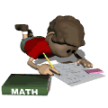

|  | or Not to Plug |
This page is a collection of ideas, advice, and good problem solving principles gleaned from my own personal study of mathematics and teaching experience. It is not intended to be scholarly, exhaustive, or in any way super elegant, merely a group of items that I wish to put in one place so that I can refer students to a written reference. If it serves as a help to them in even a minor way, it will have been worth the trouble to provide it here. Check back from time to time, in case I add items in the future. Thanks.
Something much better and more universally understood the world over (remember: math is studied internationally!) is the term "substitute," or perhaps "replace." How does this sound? "And now substitute 6 for x and simplify the equation." Better, right?
Let's leave "plug" for the end of the electrical cord used to connect your TV set to the wall outlet. (Besides, on the lighter side, "plug" is another name for an old, broken-down horse. Ugh!)
It's really quite simple to know. If you can "count" the items referred to, use "number." A problem that I was working on recently involved the "number of soldiers" that were marching. To say the "amount of soldiers" sounds a bit strange to the ear.
The word "amount," therefore, is used when you can't count, as in the "amount of milk in a glass." Of course you could count the "number of glasses of milk" or the "number of fluid ounces in the glass," but that's different. You're counting glasses, not the milk itself.
Above I explained the words "amount" and "number". Here we will look at two words often used with them when we compare things: less and fewer.
When we are comparing countable things, using number, we should say "fewer". Example: "There are fewer cookies on my plate than on yours." [Do NOT say: "
less cookies
".]
On the other hand, use "less" when "amount" is involved. Example: "There is less milk in my glass after I drank some of it."
However, you might use "fewer" with milk if you're counting glasses of milk. Look: "There are fewer glasses of milk on this table than on that one." That's because we're counting the number of glasses, not the amount of the milk.
Another set of terms that often are used improperly by many people is expression, equation, and formula. They are actually rather distinct items and have their own characters.
First, an algebraic expression is merely some combination of numbers, letters, and operations symbols (such as the signs for addition, subtraction, etc.). Some simple examples would be these:
The principal difference that distinguishes expressions from the other two is the absense of the equals sign (=).
From that last statement, we might conclude that equations (and formulas, too) do indeed have equals signs. And such is the case. That's the main reason they are called "equa-tions". Here are some basic elementary equations:
Finally, we might think of formulas as special equations that have a general and useful purpose, like the formula for finding the "perimeter of a rectangle" or perhaps the "area of a circle", and so forth. There are thousands and thousands of formulas in mathematics, too many for one person to know all of them.
But they usually take this style:
Some common formulas would include:
perimeter of a rectangle ... p = 2(l + w)
area of a circle ... A = pi * r^2
volume of a cube ... V = e^3
And let's not forget one very famous formula developed by Einstein ... E = mc^2
Here is how I use it with a simple example, finding the perimeter of a rectangle whose length is 16 and whose width is 9.
In other problems, our measurements can be were more theoretical, or "in the mind", as it were. The length of a hypotenuse of a right triangle with legs of 5 and 6, for example, could be properly stated as "sqrt (61)", without any need to give a decimal approximation. This because the decimal form of sqrt(61) is not a terminating decimal, but rather is of infinite length and has no repeating group of digits.
At other times, when a fraction like 3/7 is used or is the end result, you might just as well leave your results that way. Because any decimal equivalent can only be approximate, or involve complicated repeating decimal notation; yet the fraction is quite "exact" and simple to manage.
To Plug, or Not to Plug
One word that is definitely not very elegant for use in proper mathematical discourse, yet it is used extensively by many people, teacher and student alike, is plug. It occurs usually in sentences like this: "And now plug 6 in the equation and simplify."
Number vs Amount
Two words that are related yet mean different things in math are: and amount. They are often used interchangeably in common speech and no one seems to mind. But we should be more careful when speaking or writing them in our math explanations.
Fewer vs Less
Expressions, Equations, & Formulas
FF-SS-CT
When doing problems that involve using formulas, I have always found this little acronym useful for organizing my work: FF-SS-CT. It means:
FF:
p = 2(l + w)
SS:
p = 2(16 + 9)
CT:
p = 2(25)
..
p = 50 The perimeter is 50 units.
Exact vs Approximate
When measurements of distance, time, speed, dimensions of a physical object, amount of a quantity, etc. are involved in a problem of the "real world" variety, answers obtained from our computations can only be considered as approximations. They must be rounded in a way appropriate to the situation.
Trotter's First Law of Mathematics